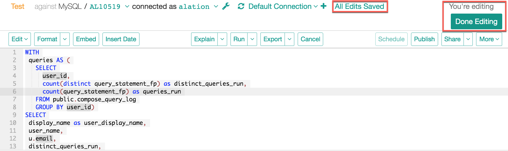
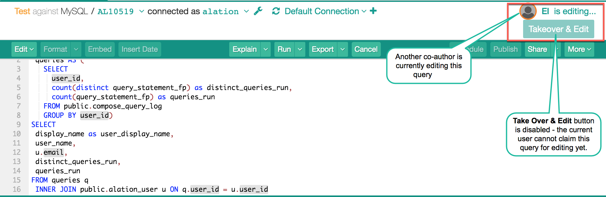
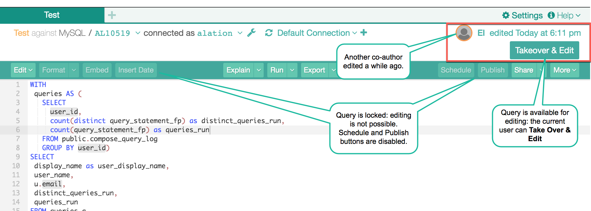
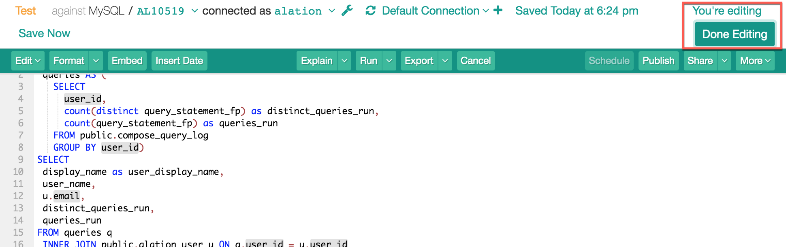
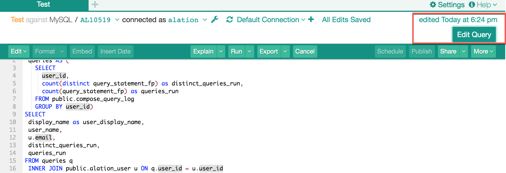
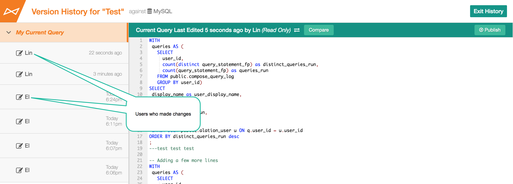
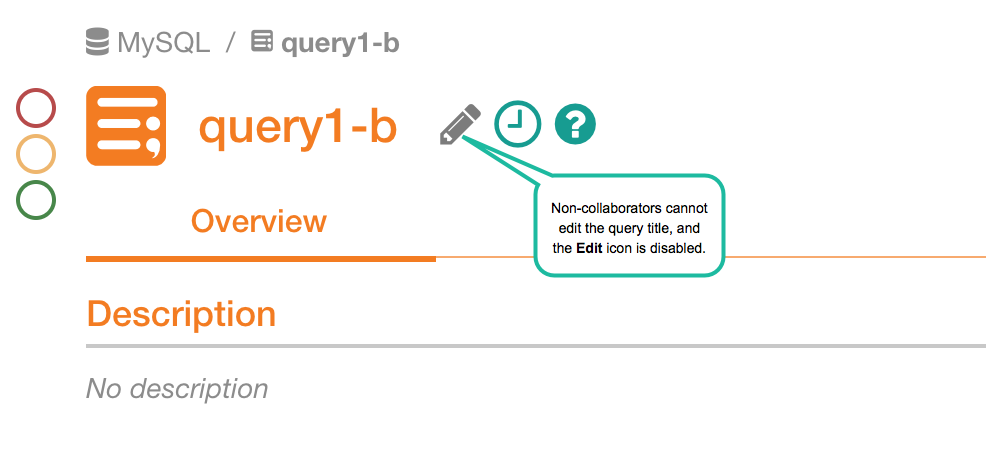

Take Turns Editing a Query¶
Alation Cloud Service Applies to Alation Cloud Service instances of Alation
Customer Managed Applies to customer-managed instances of Alation
Applies starting from V R5 (5.9.x)
With Compose, you can edit a query together with other users. When you share editing access to a query, only one user can edit the query at a time. In the top right corner of Compose, you can see who currently has editing control of a query and use the provided buttons to claim or give up editing control of the query. The following examples illustrate the process of taking turns editing a query.
Note
The terms “author,” “collaborator,” and “editor” are used interchangeably to refer to a user who has been given permission to edit a query. For more information about giving others edit access and what it enables them to do, see:
Query Collaboration Flow Examples¶
Example One¶
A user creates a query and invites another user to be a collaborator, or author. As the query owner edited this query last, they are still holding the edit control over the query. On the upper-right of the query page, there is the editing status panel that shows the current edit status. If you are currently editing, it will say You’re editing. This means that you now have the edit control. Button Done Editing on the toolbar can be used to release the edit control to other collaborators.

Example Two¶
While the owner is still editing, the invited author opens the query in Compose. They see that somebody else currently has the edit control by checking the edit status on the upper right. The query is locked. They cannot edit or use any actions that will change this query and all such buttons are disabled. To start editing, the author needs to claim this query for edits. To do so, they can either wait for the co-author to release the edit control or Take Over, and the edit control will be passed on to them on demand.
Taking over a query is only possible after the previous co-author is idle for 60 seconds. The Takeover & Edit button will appear as inactive until that time.
A co-author is currently editing: take over is disabled:
A co-author has edit control but is idle for at least 60 seconds. Takeover is active:
Example Three¶
This author chooses to take over and clicks Take Over & Edit. The edit control passes on to this user and the edit status changes to You are editing for this user.
Example Four¶
This author does a few edits and chooses to release the edit control. They press Done Editing to release it. The query can now be taken over and edited by other collaborators. When no one is editing and no one has the edit control, the button Edit Query is present on the editing status panel. The edit control can be claimed by any of the authors by clicking Edit Query.
Note
If you see the Edit Query button on the upper right, this means:
This query currently has several Authors
No one is editing. Click Edit Query to claim the edit control.
No one currently has the edit control and any collaborator can take over:

Summary¶
If you assign collaborators - authors - to your query, they receive the edit rights to this query, and all authors can take turns to change it. The query page will display the editing status on the upper right. If one author is currently editing, the query becomes locked for other authors, and they will have to wait until the edit control is released or until they can take over. The edits by the collaborators can be visible to all other collaborators almost instantly. A refresh of the browser window is required if you are monitoring the edits in real-time. Changes by all authors will be available in Query Version History with an indication of which user made the changes.
Different collaborators in Version History:
Changing Query Titles in Catalog¶
Authors can change the query title in the catalog, too, but only if the query is not being edited at that moment by another author in Compose.
Non-authors cannot change the title:
{kind=link}